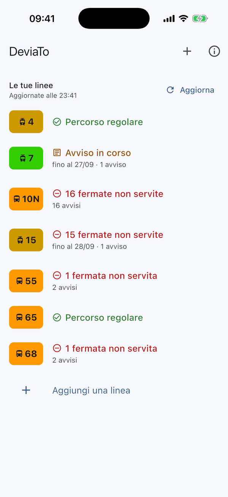

La tua fermata è ancora servita?
Quando GTT devia una linea, l'avviso elenca le vie. DeviaTo lo trasforma in una risposta: quali fermate non sono servite, fino a quando, e dove salire invece.
In arrivo su App Store e Google Play
- Gratuita
- Senza pubblicità
- Senza account
- Vibò1410sali qui
- Largo Giachino Sud422, non servita
- Verolengo1758, non servita
- Brin1760, non servita
- Mortara1762, non servita
- Treviso1764, non servita
- Umbria2170, non servita
- Regina Margherita1911, non servita
- Industria193, non servita
- Principe Eugenio2174, non servita
- Statuto Nord373sali qui
avvisi di GTTUno per fermata, uno dopo l'altro, per le due direzioni.
risposta di DeviaTo9 fermate di fila non servite. Sali a Vibò o a Statuto Nord.
Dal testo dell'avviso alla tua fermata
Gli avvisi di GTT descrivono le deviazioni a parole. DeviaTo le trasforma in un percorso sulla mappa, e da lì capisce quali fermate restano fuori.
-
Legge gli avvisi
Ogni mezz'ora raccoglie gli avvisi che GTT pubblica come dati aperti, e legge le vie che nominano.
-
Cerca le vie lungo la linea
Solo vicino al percorso di quella linea: «via Roma» non finisce a Cuneo.
-
Ricostruisce il giro
Calcola la strada che fa il mezzo e controlla che abbia senso. Se una verifica non torna, lo dice.
-
Risponde per la tua fermata
Servita o no, fino a quando, e la fermata aperta più vicina sulla stessa linea.
Quello che serve, prima di uscire

- Le tue fermate, per prime
- Salvi la fermata che usi e la home risponde per quella: servita, non servita fino al…, e dove salire.
- La deviazione sulla mappa
- Percorso normale e percorso deviato, con le fermate che saltano segnate una per una.
- I mezzi in tempo reale
- Segui i bus sulla mappa e capisci se la deviazione è già finita: GTT annuncia quando comincia, quasi mai quando smette.
- Adesso o più avanti
- Le variazioni in programma stanno a parte, con la data: non ti fanno cambiare strada oggi.
- Tutte le linee
- Urbane, suburbane ed extraurbane, tram e bus: le cerchi per numero o per via.
- L'avviso originale, sempre
- In fondo a ogni linea c'è il testo di GTT così com'è, per controllare con i tuoi occhi.
Meglio nessuna mappa che una mappa sbagliata
Se non è sicura, lo dice
Una fermata segnata chiusa per sbaglio ti fa camminare per niente. Quando un avviso non si ricostruisce con certezza, DeviaTo lo segna «Da confermare» o ti mostra solo il testo di GTT. Un percorso inventato, mai.
Niente account, niente tracciamento
Non serve registrarsi e l'app non raccoglie dati personali. Se attivi la posizione sulla mappa, resta sul telefono. Questo sito non usa cookie e non carica niente da altri server.
- 216
- linee GTT
- 30 min
- fra un aggiornamento e l'altro; la sera, ogni ora
- Gratis
- senza pubblicità né acquisti
- Aperto
- il codice, su GitHub
Da sapere
È un'app di GTT?
No. DeviaTo non è collegata a GTT: usa i dati che GTT pubblica apertamente e li interpreta in automatico. In caso di dubbio fa fede l'avviso originale, che trovi sempre in fondo alla linea.
Quanto è affidabile?
Le fermate che GTT sospende indicandone il numero sono certe. I percorsi deviati sono ricostruiti dal testo degli avvisi e controllati con alcune verifiche: quando una non torna, l'app lo dice invece di tirare a indovinare.
È gratuita?
Sì, e resterà senza pubblicità e senza acquisti. I dati di GTT si possono usare solo così, ed è giusto.
Mi avvisa quando la mia linea devia?
Non ancora: per ora le novità si vedono aprendo l'app. Le notifiche sono il prossimo passo.